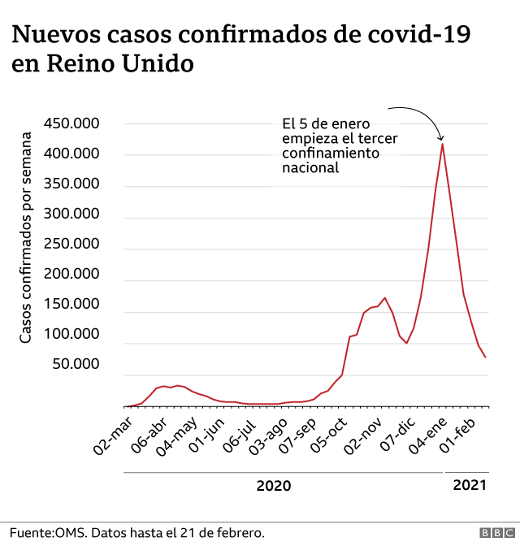
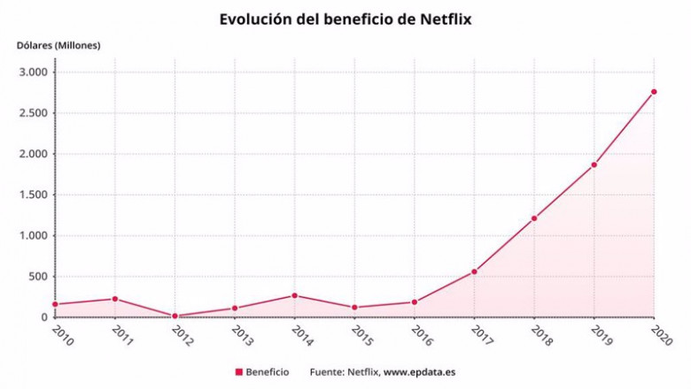

Comenzamos el viaje
Introducción. ¿Para qué nos sirven las funciones?
En un primer momento seguro que piensas que las funciones es un concepto matemático extraño y que probablemente no tendrán utilidad real. ¿Y si te dijera que tienes contacto con ellas todos los días? ¡Vamos a descubrirlo!
Casos cotidianos de representaciones gráficas de funciones.
Estudio del número de infectados.
Volvamos a 2020, cuando estábamos confinados por el COVID 19. Todos los días estábamos pendientes de la televisión para ver el aumento de contagiados por el virus. Esto podía hacerse de muchas formas, por ejemplo, el número de aumentos a lo largo del mes o de forma más general, a través de los meses.
En Reino Unido decidían fijarse en el inicio de los meses para comprobar el avance de nuevos casos:

Análisis de los beneficios y gastos de un comercio
Seguro que algún familiar o un amigo tuyo trabaja en una tienda o comercio. Por supuesto, lo más importante es vender y por tanto ganar beneficios. No obstante, según la época del año en la que nos encontremos, las ganancias pueden ser mayores o menores según las circunstancias. Por ejemplo:
- En hostelería, en verano la gente esta de vacaciones y consume más.
- En los cines, los meses donde salen mejores y más populares películas hay más espectadores.
- En las academias, en los periodos de exámenes hay más estudiantes que recurren a su ayuda.
¿Pero que ocurre con los comercios donde no es tan obvio? Muchos de ellos deciden estudiar a lo largo de los años el número de beneficios para extraer conclusiones.
¿Te suena Netflix? En los últimos años ha adquirido popularidad, lo que se traduce en mayores beneficios, como puede observarse en la siguiente imagen:

¿Serías capaz de identificar porque hubo un aumento tan grande en 2020?
1. Interpretamos la información de nuestro alrededor
¡Hora del informe diario! Van a anunciar como progresa la evolución de infectados. Sin embargo toda tu familia ha salido a aplaudir y eres el único en casa que está atento. Serás capaz de decirle a tu familia lo sucedido a la vista de la imagen anterior?
2. Reconstruyendo el mundo
Vamos a deducir un resultado que te sorprenderá como estudiante. Seguro que muchas veces te has preguntado porque cuando llevas un buen rato estudiando te cansas y tardas más en pensar las cosas. Pues aquí está la respuesta. No obstante, me he confundido y he puesto las cosas desordenadas. ¿Me ayudas?
{kind=link}
{kind=link}